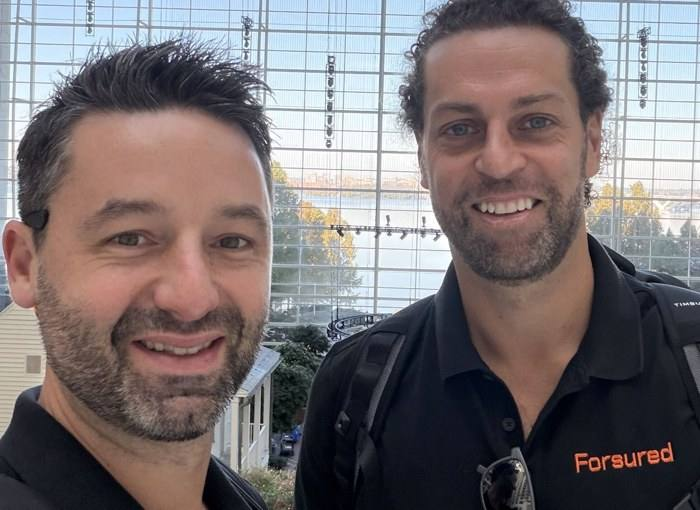
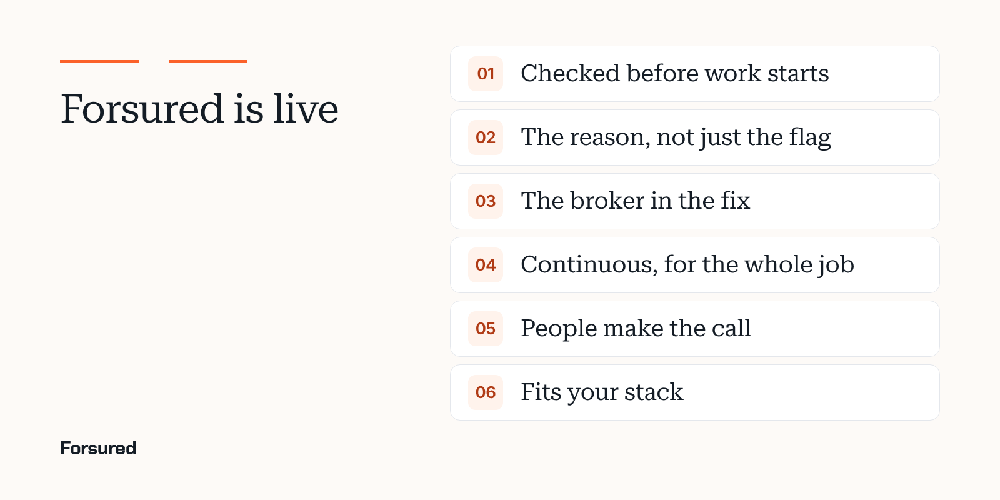

Blog / Forsured news
Forsured newsForsured launch highlights: the Built Week video, the press coverage and the momentum since Demo Day
Thank you. That's the first thing we want to say about the Forsured launch. On Nov 19 we came out of stealth at BuiltWorlds Demo Day in Boston with continuous insurance compliance software that checks every contractor COI against project requirements. Here's the week: the video, the press, and the people who showed up for us.

Launch week at a glance
- Nov 19Out of stealth on the BuiltWorlds Demo Day stage during Boston Built Week
- 1 of 9Companies presenting at Demo Day at BuiltWorlds Venture East 2026
- 2Publications covered the launch: the Boston Business Journal and Banker & Tradesman
- ~10General contractor pilots, the first several now paying customers
- 20+RiskProNet brokerages advocating for Forsured with their contractor clients
On Nov 19, 2026, we walked onto the BuiltWorlds Demo Day stage in Boston and took Forsured out of stealth. We built this page to say thank you, and to put the Forsured launch highlights in one place: the video, the press, our team and the people cheering us on.
Who covered the Forsured launch?
Two publications covered the Forsured launch on launch day, and we're grateful to both. Grant Welker wrote it up for the Boston Business Journal, and Steve Adams covered it for Banker & Tradesman.
- Boston Business Journal
Grant Welker · Nov 19, 2026Subscriber storyRead the storyBoston startup targets contractor liability risk with software that flags lapsed subcontractor insurance
- Banker & Tradesman
Steve Adams · Nov 19, 2026Subscriber storyRead the storyStartup Pitches Insurance Compliance for Construction Industry
What did the founders say about the Forsured launch?
The short version of the Forsured launch at BuiltWorlds Demo Day: we kept our heads down and built, and then the market started pulling. Contractors asked us to replace the tools they have. Brokers started bringing us their clients. General contractors started paying before we'd said a word in public.

Marc and Zach have been friends since age three in Methuen. Marc leads product. Here's how he puts the job:
“Anyone can point AI at a certificate and call it valid. That's not the job. The job is knowing whether this contractor is covered for this project, today, and getting the gap closed before work starts and continued through the project.”
Marc Gigliotti, Founder and Chief Product Officer
How did our network react to the Forsured launch?
Our network showed up for the Forsured launch, and it meant the world to us. Founders, operators, investors and brokers filled the comments on our LinkedIn launch post within hours. If you want to help, like, comment on or repost it.
In our 20s we made each other a promise: one day we'd build products together. Our own. Forsured is us just doing the thing.
Want to help? Like, comment on or repost the launch post. Every share puts Forsured in front of another general contractor or broker.
Like, comment or repost on LinkedInA few of the comments that made our week:
Erik WenstoneFounder and CEO, ForsuredExcited to be a part of this team! The solution that is needed. Nice work Zach Servideo and the entire Forsured team.
Scott Baldwinyoo, this is amazing and probably a huge headache if GCs are doing on their own. All the things I never even think of. A no brainer
Kate CampbellCongratulations!! Saw the BBJ article and so happy for you!
Sheryl Sleeva, Ed.D, MBAHeartfelt congratulations to Zach Servideo and the entire team at Forsured. It has been absolutely amazing to watch your journey. Super excited about the road ahead. Cheering you on
Jeff BenantoGreat idea and untapped market! Congrats on the launch.
Anil RathiCongratulations Zach Servideo on the new venture, sounds like a big market opportunity for risk management!
What is Forsured?
Forsured is continuous insurance compliance software for construction. It checks every contractor COI against the project requirements of the job it's for, before the contractor steps on site, then keeps checking and routes every fix to the broker.
Continuous insurance compliance answers one question: does this contractor's coverage meet the project requirements, today and for the life of the job?
Why do contractor COI checks go stale?
Contractor COI checks go stale because the file gets closed on day one. Mid-project, a policy lapses, renews lower or drops an endorsement, and nobody knows until a claim lands. In one Arkansas case, a general contractor left off its contractor's policy and its own insurer paid more than $1.2 million after the Court of Appeals ruled on Mar 11, 2026 that the contractor's insurer owed nothing, Insurance Business reported. The first look often fails too: IA Magazine cited industry estimates in February 2026 that 45% to 55% of initial COI submissions in construction are rejected for errors or missing information. And an additional insured checkbox on a certificate isn't the endorsement that extends coverage to you. See why compliance isn't coverage.
How does continuous insurance compliance work?
Continuous insurance compliance works like this:

- Checked before work starts. Forsured reads the project requirements, then checks each contractor COI and endorsement against them.
- The reason, not just the flag. Every gap says what's wrong and what's needed: a missing additional insured endorsement, a short limit, a policy about to lapse.
- The broker in the fix. The contractor's broker sees the requirement, the document and the project in one place, verifies coverage, and closes the gap inside the app.
- Continuous. Renewals and coverage changes are tracked, with alerts well ahead of expirations, so "compliant" never goes stale.
- Humans in control. AI reads the documents; people can review and approve. Every decision is auditable.
- Fits your stack. Forsured integrates with Procore, and trade contractors don't have to sign up for anything on day one. See where insurance sits in Procore.
How are general contractors working with Forsured?
General contractors run Forsured on live projects, and contractors' brokers close gaps in the app. Trade contractors and brokers pay nothing, and we take no commission. Here's how one of our first Boston customers describes it:
We're a Boston general contractor and we run lean. Our insurance tracking lived in a spreadsheet and one person's inbox. Forsured showed us exactly where our contractors' coverage fell short of what our projects require, and it keeps watching so we don't have to. Saying yes was easy.
Steve Stoddard, owner of Lighthouse Construction and one of Forsured's first paying customers
We're not doing this alone. More than 20 RiskProNet brokerages, with about $2 billion in combined revenue, are advocating for Forsured with their contractor clients.
Brokers get pulled into compliance fire drills after everyone is already frustrated. Forsured moves that conversation upstream. The broker sees exactly what the project needs and fixes it once. Nobody pays a commission, and the broker's client relationship gets stronger.
Erik Wenstone, Founder and CEO of Forsured and a principal at CMR Risk & Insurance Services
What happened at BuiltWorlds Demo Day?
BuiltWorlds Demo Day was the stage for the Forsured launch. We pitched on Thursday, Nov 19, in the 10:50 AM to 12:20 PM ET session at Convene One Boston Place, 201 Washington St., Boston. Missed BuiltWorlds Demo Day? Send us one project's requirements and a contractor COI, and we'll run the same free COI risk check behind the pitch.
How do you check a contractor COI against project requirements?
You check a contractor COI against project requirements by reading the certificate and every endorsement behind it against what the contract asks for: limits, additional insured, primary and noncontributory, waiver of subrogation and dates. That's continuous insurance compliance, and it's why we built Forsured. Our guide on how to check a contractor COI walks through each line.
Get the Forsured weekly newsletter.
One email every Monday: short summaries of the week's posts on contractor COIs and project requirements, plus the coverage gaps we're seeing on real projects.
You're on the list. Look for the newsletter on Monday.
One email a week. No spam. Unsubscribe anytime.
About Forsured
Forsured is construction insurance compliance software for general contractors and the brokers who insure their trade contractors. You set each project's insurance requirements once. Forsured reads every contractor COI and endorsement against them, flags each gap with the reason, and keeps checking through renewals until the job is done.
- Project requirements with exceptions, not one template for every job
- Endorsement review (additional insured, waiver of subrogation, primary and noncontributory), not just the certificate
- A shared workspace where the contractor's broker sees exactly what's missing
- A person on your team approves every result, with a full review history
“What stood out to us is that Forsured doesn't just organize the paperwork. It helps us understand what meets the project requirements, what needs attention, and what needs to happen next. That clarity across the GC, subcontractor, and broker is where we see the real value.”
Send us one project's requirements and a contractor COI or two. We'll show you every gap we find, free.
Common questions
What is Forsured?
Forsured is continuous insurance compliance software for construction. It checks every contractor certificate of insurance and endorsement against the requirements of the specific project it's for, flags each gap with the reason, brings the contractor's broker into the fix, and keeps watching after approval. It launched publicly on Nov 19, 2026.
Who covered the Forsured launch?
The Boston Business Journal and Banker & Tradesman covered the Forsured launch on Nov 19, 2026. Grant Welker wrote the Boston Business Journal story, and Steve Adams wrote the Banker & Tradesman story. Both are subscriber stories. Links to both, plus the Built Week video and Zach Servideo's LinkedIn launch post, are on this page.
What is continuous insurance compliance?
Continuous insurance compliance means a contractor COI isn't checked once and filed. Policies lapse, renew with lower limits or drop endorsements mid-project, so Forsured keeps tracking renewals and coverage changes, with alerts well ahead of expirations, until the job is done. Compliant stays a current answer, not a date in a spreadsheet.
How do general contractors pay for Forsured?
General contractors pay an annual subscription, and the first project is free. Trade contractors and brokers pay nothing, and Forsured takes no commission. Forsured doesn't use the seat-heavy contracts common in the category. Any general contractor or broker can request a free COI risk check at forsured.ai.
Does Forsured work with Procore?
Yes. Forsured launched its Procore integration this fall, with more integrations on the way. General contractors set up contractor profiles themselves, so trade contractors don't have to sign up for anything on day one. Our Procore COI tracking post explains where insurance records already sit in Procore.
Who makes the final call on a contractor COI in Forsured?
People do. AI reads the documents, and the general contractor's team can review and approve every result. Each decision is auditable, so you can see what was checked, what was flagged, who approved it and when, on every contractor across every project.
Where did Forsured launch?
Forsured launched at BuiltWorlds Demo Day on Nov 19, 2026, during the 10:50 AM to 12:20 PM ET session at Convene One Boston Place, 201 Washington St., Boston. It was one of nine companies presenting at BuiltWorlds' 2026 Venture East: AEC Emerging Tech conference, part of Boston Built Week.
Sources
- 2026 Venture East: AEC Emerging Tech, BuiltWorlds, checked Nov 18, 2026
- Additional insured (AI), IRMI, checked Nov 18, 2026
- Arkansas court rules insurer owes nothing to contractor left off policy, Insurance Business, Mar 13, 2026; checked Nov 18, 2026
- Magic in a Bottle: Challenges and Opportunities with Certificates of Insurance, IA Magazine (Independent Agent), Feb 28, 2026; checked Nov 18, 2026
- Boston startup targets contractor liability risk with software that flags lapsed subcontractor insurance, Boston Business Journal, Nov 19, 2026
- Startup Pitches Insurance Compliance for Construction Industry, Banker & Tradesman, Nov 19, 2026
- Zach Servideo's Forsured launch post, LinkedIn, Nov 20, 2026
We link to the original reporting and research behind every post. This post is general information, not legal or insurance advice: Forsured is a software company, not a law firm or a licensed insurance agency, so confirm anything you'll rely on with your broker or attorney. Spotted something we got wrong? Write to hello@forsured.ai and we'll fix it.
About this article

Written by Zach Servideo, Founder and Chief Growth Officer.
Published . Updated . Every source is linked above.